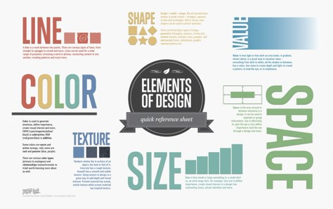

When creating my model I focused on trying to use all the main design features in my model. When creating my model I made sure to use a all the tools I had available with in the soft where I chose to use which was called Magical Voxel. As I made my model I incorporated many different colours and made sure to change up the textures when In the rendering stage of my models build. I also incorporated shapes in to my build as I used blocks to build the majority of the model. I also tried to use the concept of space in my model as I photographed it and rendered it.
This shows the softwhere i used to build my 3D model
